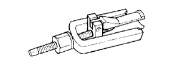

БЛОК МЕХАНИЧЕСКОЙ ТРАНСМИССИИ (для моделей с 1KD-FTV) > РАЗБОРКА > Подготовка

 | 09308-00010 | Съемник сальников |
|  | 09319-60020 | Съемник игольчатого роликового подшипника выходного вала |
| 09322-35010 | Набор инструментов для блокировки первичного вала | |
| (09322-03010) | Звездочка для блокировки первичного вала | |
| (09322-03020) | Соединительная накладка для блокировки первичного вала | |
| (09322-03030) | Пластина для блокировки первичного вала | |
| (90105-12087) | Болт | |
| (90170-12030) | Гайка | |
| (94622-51200) | Шайба | |
| 09326-35010 | Ключ и переходник для регулировочной гайки выходного вала | |
| (09326-03010) | Ключ для регулировочной гайки выходного вала | |
 | 09817-16011 | Ключ для снятия датчика заднего хода на трансмиссии |
| Фирменный герметик Toyota 1281, Three Bond 1281 или аналогичный |
| Зубило | - |
| Нутромер | - |
| Индикатор часового типа | - |
| Комплект плоских щупов | - |
| Микрометр | - |
| Универсальная консистентная смазка | - |
| Пластмассовый молоток | - |
| Пресс | - |
| Динамометрический ключ | - |
| V-образные призмы | - |
| Штангенциркуль | - |
 | 09010-3C100 | Комплект торцевых шестигранных головок | - |
 | (09013-6C130) | Торцевой шестигранный ключ 10 мм | - |
 | 09013-7C120 | Прямая шестигранная головка 14 мм | - |
 | 09051-1C410 | Бородок с тонким цилиндрическим концом 5 | - |
 | 09905-00012 | Съемник пружинных стопорных колец № 1 | - |
| Параметр / Устройство | Объем | Классификация |
| Масло для механической трансмиссии | 2,1 литра (2,2 кварты США, 1,8 английской кварты) | SAE 75W |